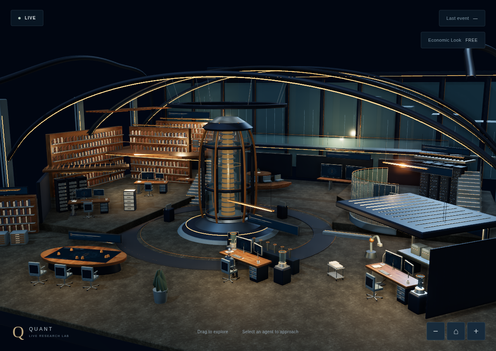
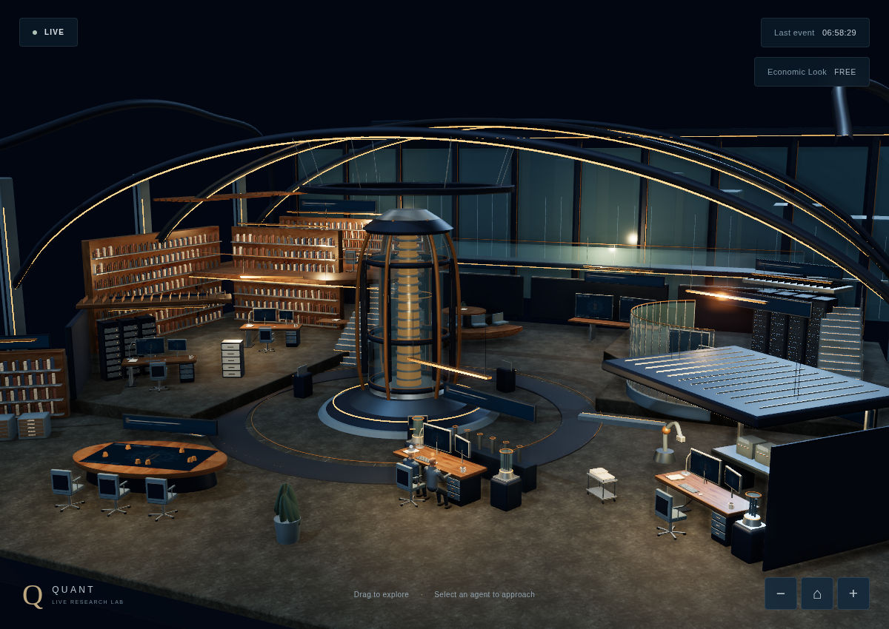
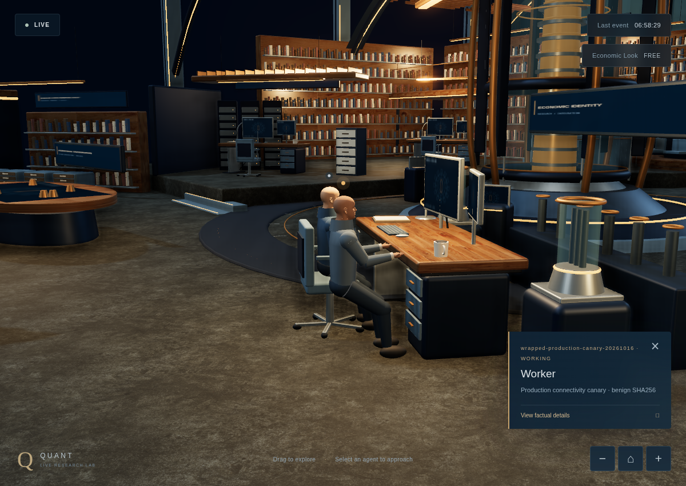
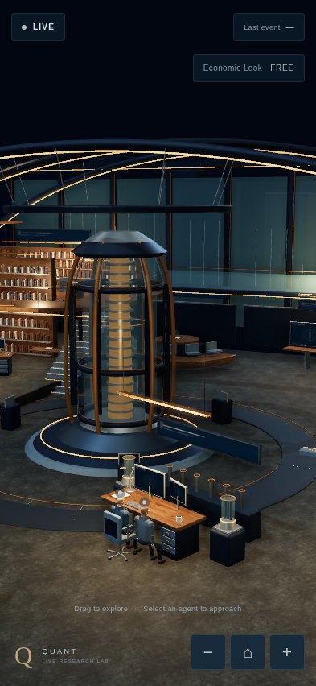
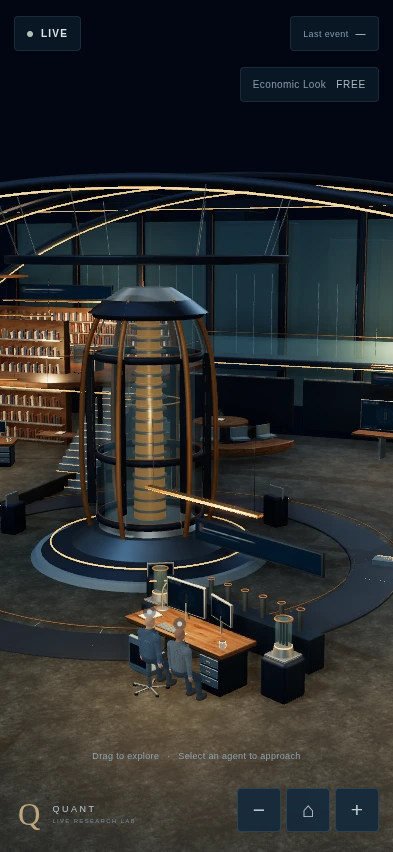

Actual public Site, native authenticated ingress, D1 store, SSE, canonical mapper and reducer. Activity is a real wrapped benign SHA256 subprocess, solely an operational connectivity check. No research, economic calculation or Codex/Owner identity is claimed.
Final canary receipts · 34 production asset hashes · Deployment checkpoint





Connected portrait/fallback verification · Temporary credential revocation
Native Economic Look remains unsupported; no production economic activation is fabricated. Real iPhone/Safari hardware performance is unverified. The earlier screenshot timeout and retry-harness assertion are retained as separate diagnostic JSON files.